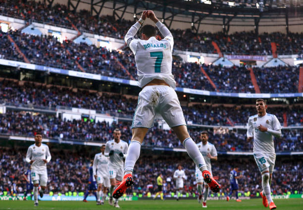

O momento mais importante de uma partida de futebol com certeza é o gol, e isso não é diferente na Liga dos Campeões, porém a maioria deles não acontecem de maneira individual. O passe que antecede o gol é chamado de assistência, e agora veremos os maiores assistentes da história da Champions!
Maiores assistentes:
10º Luis Suárez (Uruguai) - 25 assistências

9º Cesc Fàbregas (Espanha) - 25 assistências

8º Neymar Jr (Brasil) - 26 assistências

7º Karim Benzema (França)- 27 assistências

6º Andrés Iniesta (Espanha) - 29 assistências
5º Di María (Argentina)- 30 assistências

4º Xavi (Espanha) - 31 assistências
3º Ryan Giggs (País de Gales) - 33 assistências

2º Lionel Messi (Argentina) - 35 assistências

1º Cristiano Ronaldo (Portugal) - 40 assistências
